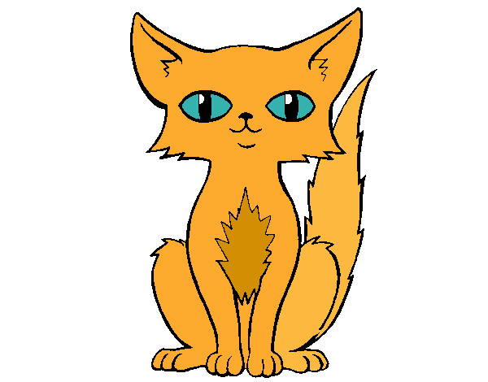
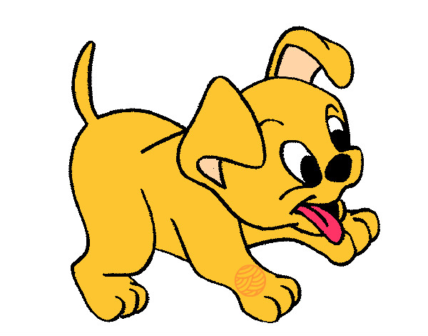
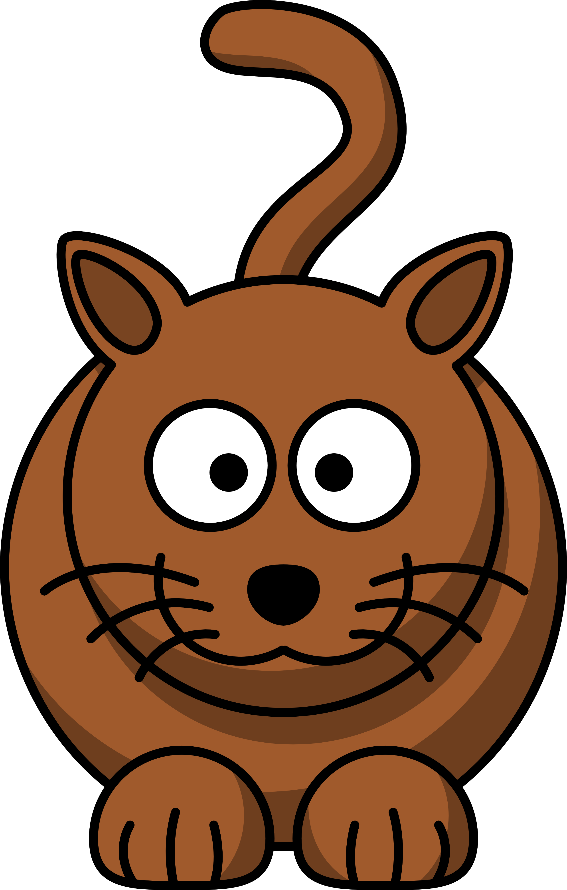

Nós
Emily e Roberta somos estudantes da Escola salesiana São José, fazemos Curso Técnico de Informática e estamos no 2 ano. Gostamos de informática por isso resolvemos fazer o curso,
por ser algo que já queriamos fazer, e essa foi a oportunidade.
Sobre o projeto
Foi decidido pelo curso que fariamos um TCC nesse 2 ano, com isso teriamos que criar um projeto que ajudasse a população, foram pedidos projetos que se baseam na area
de informática, pois é relacionado ao nosso curso. Nosso projeto é sobre um organizador para ONGs de animais com o intuito de ajudar as ONGs sem ter
que usar papeis no caso seria por computador e possivelmente crariamos um APP. Esse projeto é um acesso a todas as ONGs possiveis.
CPDB
CPDB é um projeto do São José Escola Salesiana de Campinas, o CPDB oferece bolsas para jovens de 15 a 17 anos de idade com o intuito de fazer um curso técnico.
Os alunos escolhem a matéria que querem fazer e também escolhem o seu horário para estudar, isso ajuda jovens que não tem condição de pagar um curso técnico mas querem ter a
a oportunidade de fazer um curso de boa qualidade.
Orientação
A orientação é feita por quatro Professores, mostrando que cada projeto tera seu Orientador e co-orientador, eles nos dão orientações sobre o que estamos fazendo e o que podemos melhorar com o projeto,
eles sempre monitaram o que estamos fazendo para tentar aproveitar o tempo que temos.